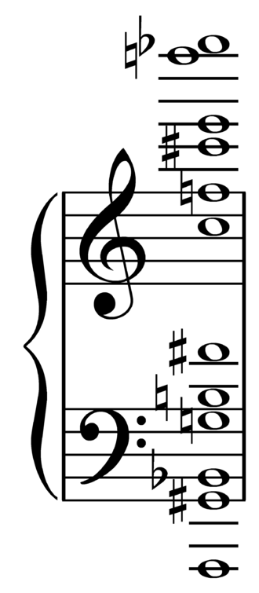

Composición Musical
Clase 007

J = T - T - sT
D = T - sT - T
F = sT - T - T
L = T - T - T
J = J + J
D = D + D
F = F + F
L = L s+ J
M = J + D
E = D + F
Lo = F s+ L
A = sT - T 1/2 - sT
m arm = D + A
m md = D + J


Grossmutterakkord

Postdata
007